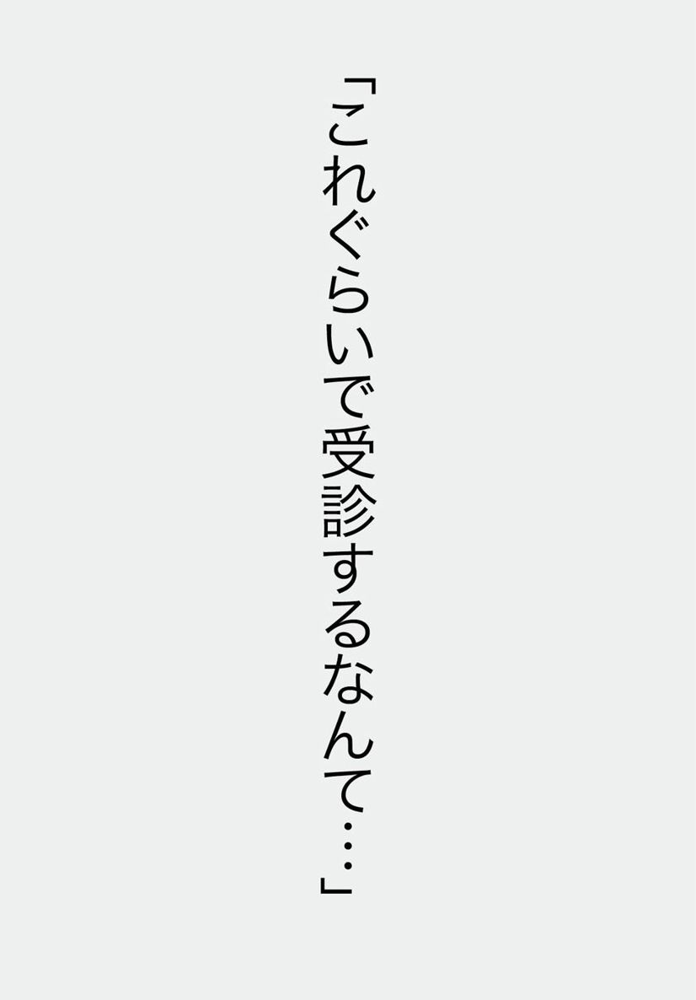
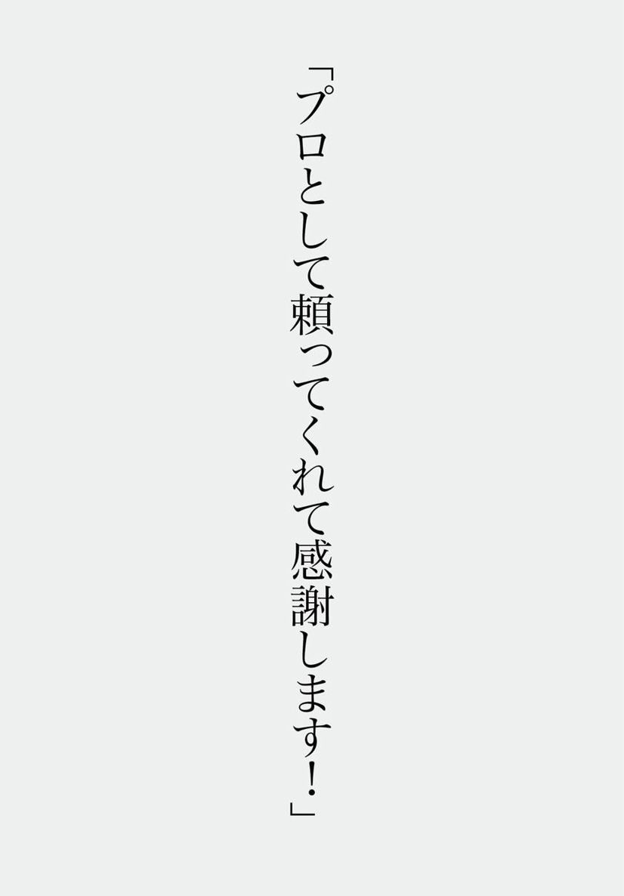

| 精神科医が応える 「悩みを武器にする」２２のヒント 気軽に覗けるセカンドオピニオン (impress QuickBooks) | |
| Ｔｏｍｙ | |
| (2013) | |


目次
●はじめに
はじめまして、アテクシ、ゲイの精神科医のＴｏｍｙと申します。ちなみに「アテクシ」というのは「アタシ→アタクシ→アテクシ」と変化していったものでして、要は「私」という意味ですわ。
アテクシ、ブログで皆様からの「お悩み相談」にお答えしております。３年ちょっと前からはじめましたけれど、気がついたら、もう７６０人以上の方のお悩み相談に答えています（２０１３年７月現在）。アテクシ自身もビックリだわ！
ブログに掲載したお悩み相談は誰もが、何度でも読めます。だからこそ、普通の診察とは違って、より多くの方のお力になれる部分もあるんじゃないのかな、なんて最近は思っています。
そこで今回、そのブログの中から、特に皆様に役立ちそうな部分をピックアップして、一冊の電子書籍にまとめました。おまけとして、ゲイやオネエについて書いた面白コラムを加えてみたわ。ゲイとかオネエとか、なんとなく知っててもよくわからない方もいっぱいいらっしゃると思うのよね。
気軽に読めて、面白くて、役に立つ、そんな一冊に仕上がったと思います。皆様楽しんでくださいませね！
◆著者紹介◆
Ｔｏｍｙ
著者。ゲイ。
ブログではオネエ口調だが、実はそうでもないという話も。
また、アテクシという言葉を頻繁に使う。これはワタシ→アタシ→アテクシとなったもので、自分のことを指している。
実生活では、パートナーのジョセフィーヌに常に尻にしかれている。
現在は某精神病院に勤務している。
◆おまけで著者のパートナー紹介◆
ジョセフィーヌ
Ｔｏｍｙの恋人、パートナー。
なぜか、フランス人女性のような名前であるが、れっきとした日本人♂。
もちろんゲイ。
Ｔｏｍｙとの関係はお互いの家族が公認である。
とってもマイペースで超天然。散々Ｔｏｍｙを振り回している。
でも、本当はとっても愛情深い。
本人はまったくおしゃれに気を使わないのに、異常にモテる。
オナラの達人であり、音量、音階、くささのレベルまで自由自在に操れる。
実は彼も精神科医である。
大学卒業後、既に精神科医となっていたＴｏｍｙに出会い、精神科を目指すことになった。
現在は精神病院に勤務しているが、Ｔｏｍｙとは別の病院であり、オフィスラブではない。
＊ ＊ ＊
まずは、アテクシの人となり？ がわかるように自己紹介代わりに、アテクシとジョセフィーヌの関係についてのお話を。
ジョセフィーヌにこんなことを聞いてみた。
アテクシ
「ねえねえ、初めて会ったとき、アテクシのいった言葉で覚えているセリフある？」
ジョセフィーヌ
「あるわよ」
アテクシ
「それは何？」
ジョセフィーヌ
「あなたの家に泊めてもらったとき、Ｔｏｍｙは朝食代わりに、ガラスの椀にプリンか何か入れて出してくれたのよ。覚えてる？」
アテクシ
「ええと......、そうだったかしら」
ジョセフィーヌ
「そのとき、Ｔｏｍｙはあたしに向かってこういったの。『大丈夫、このプリンの入っている器は、金魚とか飼ったりしてしない綺麗な器だから安心して食べてね』って。覚えてる？」
アテクシ
「はて、アテクシそんなこと言ったの（汗）？」
ジョセフィーヌ
「それ聞いたとき、あたし思ったの。この人ものすごく変な人だわって。
あたし変人タイプなのよね」
参考になったかしら？
１「彼との関係」
Ｇさんからのメッセージ
三十六才です。私には彼氏がいますが、お相手はバツイチで既婚者です。昨年の四月からお付き合いしています。
この彼とは私が若いころ五年間程お付き合いしていた経緯がありまして、この時も最初の一年は彼女がいる、所謂二股の関係でした。
いざ私ときちんとお付き合いするようになったものの、女癖の悪さ？ だらしなさ？ は異常な人でした。
どんな状況でも、有り得ない嘘で絶対に浮気は認めない人ですが......。
彼は小さい頃にご両親が離婚し、お父さんに育てられました。バーテンダーやホストまがいな事もしたりして女性にまみれて生きてきたように思われます。
現在では自分で会社を立ち上げ自活していますが、結局はバツイチで再婚したものの、約一年前から私という愛人を作っている状況です。
ひょっとしたら、私以外にもいるかもしれません。
私の勝手な見解ですが、全員に１００％の愛情で付き合える人のように感じます。
こういう親の愛情に飢えて育った人はやみくもに愛情を求めてしまうのでしょうか？
この歳にもなってお恥ずかしいのですが、彼とこの先どうしたいとかのビジョンが私自身全く判りません。
私は元々過度のさみしがり屋と言いましょうか、過去にリストカットや摂食障害（過食嘔吐）などの自傷行為を経験しておりまして、認めたくないのですが依存症の傾向が高いと感じます。
今でも大喧嘩もしょっちゅうですし、お酒の量も増えました。
なので、私のような性格の人間がこのような彼とお付き合いしていくのが恐いのです。
しかし今の私は彼と離れる事が出来ずに、四六時中、相手次第で一喜一憂しております。
辛い事が多すぎて、どうしようもなく、でも誰かにハッキリと言ってほしくってＴｏｍｙさんに相談してしまいました。
バカな女の相談でご迷惑でしょうが、宜しくお願いいたします......。
Ｔｏｍｙより
多分、彼はたくさんの女性から愛されていると確認することで、自分を確認しているのじゃないのかしらね？
その内面にはむしろ、自分に対する自信のなさをなんとなく感じるわ。
あなたと彼は共依存に近い関係だと思うわ。
でも、共依存だから全てが悪いわけでもなく、あなたがそれでいいのなら別にかまわないと思うの。
ただ、このままの自分じゃいけないと思うのなら、自分を変えていくしかないでしょう。
自分を変えていく中で、どうしても今まで彼としっくり行っていた部分がしっくり来なくなると思うわ。
彼ではなく、行動するのはあなたよ。彼といて「？」を感じるのなら充分自分で考えて結論を出しましょ。
アテクシがいろいろ言っても、結局あなたが納得しないと意味がないもの。
参考になったかしら？
２「過去のリストカットの跡」
Ｋさんからのメッセージ
以前から切実な悩みがあり、Ｔｏｍｙ先生に思い切って相談します。
私は現在精神科に通院しています。双極性障害と診断され数年になります。
今回の悩みも主治医に相談すればよいのですが、いつも心の励みにしているＴｏｍｙ先生の考えもぜひ聞かせて頂きたいのです。
現在はもう全くしておりませんが、昔は自傷癖があり、リストカットをしていました。
縫い傷も数本あり目立つのと、左腕（手首から肘まで）に、あきらかにリストカットとわかる規則正しく切られた傷がびっしりあるので、真夏でも長袖を着る以外に隠しようがありません。
自業自得だと心から反省していますし、それ以上に心から後悔もしています。
本題なのですが、真夏に半袖になれないため、就職先が限られてきます。半袖の制服のある所では雇ってもらえないとあきらめています。
現在は私服でも大丈夫な職場に勤めていますが、傷を隠せるという理由を一番にして就職先を探さないといけないので、本当にしたい仕事（接客業）が出来ないのが現状です。
リストカットの傷は何をしてももう消えないのでしょうか？ 保険適用が可能な方法で少しでも治す事はできませんか？
一度、美容整形外科のホームページでリストカットの傷を目立たなくする方法を見たのですが、傷は消えないので、代わりに火傷の後？ に見せることなら可能で、私の傷の範囲ではとんでもない金額になりそうです。
自業自得とはいえ、この傷がある限り私は就職や恋愛に対してとても臆病になってしまい、このまま消えてしまいたくなるほど自分自身を卑下してしまいます。
年齢も恥ずかしながら、もう三十代半ばになります。歳を重ねる毎に、この気持ちがますます強くなり辛くなります。
これからも、ブログ楽しみにしています。一見、自分には全く関係のない悩み相談の中に、ずっと自分自身が悩んでいた答えが書かれていたりする事が多く、ハッ！ とさせてもらえるＴｏｍｙ先生のブログにいつも勇気をいただいています。
Ｔｏｍｙより
アテクシのブログがお役に立っているみたいで、何より嬉しいわ。
リストカットの傷跡の治癒については専門外なので、あまり参考になる意見は出せないかもしれません。
ただ、双極性障害の治療歴があり、それに伴うリストカットということであれば、もしかしたら保険診療の可能性が残されているかもしれないわ。
一度精神科を受診して、自由診療の美容整形ではなく、皮膚科か、形成外科宛に紹介状を書いていただいてはいかがかしら？
それとは別に、リストカットの傷についての考え方について何かしらヒントを。
人間どんな過去があって、どういう風に自分との戦いをしてきたかは誰にもわからないわ。
でも、現在前向きにやっていけるのならば、それでいいのじゃないかしら？
あなたの傷は、過去の自分との戦いの勲章のようなものであって、決して恥じることはないと思います。
リストカットをしたおかげで、自分自身を保って乗り越えられてきたのよ。
もちろん、あえてする必要はないけれど、自業自得だ、恥ずかしいと考える必要もないわ。
あなたが気にしすぎていると、かえって周りも気を使ってしまうから、何事もないかのように、堂々と気にせず振舞っていたらどうかしら？
あなたがあっけらかんとしていたら、周りも気づきすらしないこともあるわ。むしろ今出来ること、これからの自分に目を向けてはいかがかしら？
参考になったかしら？
３「虫が怖い」
Ｎさんからのメッセージ
精神科の分類なのか分からないのですが、凄く辛いので相談させて下さい。
いつの頃からか分からないのですが、「虫」が怖くてたまらないのです。
今、三十代前半ですが、幼い頃はカマキリや蛙を平気で捕まえていました。
虫が怖いと思うようになったのは、覚えている限りでは十代後半だと思いますが、それが年々ひどくなっています。
一人暮らしをしていた数年前は、夜中に大きい蚊が部屋にいたので、号泣しながら彼に電話をして一時間かけて来てもらいました。
またある日は、蚊に殺虫剤をかけすぎて自分の具合が悪くなるし、死骸を片づけられなくて妹に電話し、号泣しながら蚊を掃除機で吸い取りました。
汗だくになりながらたった一匹の蚊を吸い込むのに一時間もかかったのです。
蟻でも同じことがありました。
結婚してからは、虫が部屋にいるとその部屋には入れず夫の帰宅を待っています。
昨日は、車のドアに糸トンボが止まっていて車に乗れず、見知らぬ人に声をかけて取ってもらいました。
田舎に住んでいますので虫は沢山います。これから、子どもを産み育てる中で私がこんな風では......と悩んでいます。
虫がここまで怖いのは、自覚のないトラウマなどがあるのでしょうか。虫が怖くなくなる催眠術などないかな？ などと真剣に考えてしまいます。
虫に関する話しをすると人に笑われますが、私は真剣に悩んでいます。
Ｔｏｍｙより
あえて病名をつけるとすれば「恐怖症」ということになるわね。
人間は、怖いもの、嫌なものに接すると「怖い、不安だ」という感情が起きるようにできているわ。危険を避けるためにも、これは必要なことなのよ。
でも、時にそれが過剰に働き、必要以上の不安を生じることがあるわ。
それが特定の状況であれば、「閉所恐怖症」「高所恐怖症」、特定の物であれば、「先端恐怖症（鋭利なものが怖い）」などになります。
もちろん、アナタのように「虫」「蛇」などが怖い場合もよくあるわ。昔は平気でも、急に恐怖症になることもそんなに珍しいことではないの。アナタのおっしゃるように、特定の「トラウマ」が原因になることもあるし、特に原因がはっきりしないことも多いわね。
軽度であれば「○○が苦手」程度で済むけれど、アナタのように日常生活に影響が出るぐらいならば、不安症に準じた治療（認知行動療法や、少量の薬物治療）も必要なことがあるわ。
「こんなことで......」などと思わず、一度精神科を受診されてもいいと思うわ。
ただ、特別な方法で一度に解決する、というものではなくて、少しずつ良くしていくようなものよ。
また、催眠術というのは医療的にあまり実証された方法ではないので（通常、精神科でも扱いません）おすすめはしないわ。
参考になったかしら？
４「いじめられていた過去」
Ｋさんからのメッセージ
高校生の女子です。中学卒業までイジメられていました。それが原因で、人が怖くなりました。
高校に行ってからも、クラス全員が自分の悪口を言ったり、笑ったりしているのではないか、人前に立ったら笑われるのではないか、何か失敗したら指さされて笑われたり、笑い話にされるのではないかなど考えてしまって怖くて仕方ありません。
誰かと話す時ですら、相手と視線を合わせられません。その上、頭が真っ白になります。怖くなりすぎると、イジメられていた時を思い出して過呼吸・めまい・腹痛などになるときもあります。
イジメられていた当初に、「辛い」とか「苦しい」という気持ちを抑えこみすぎたせいか、今でも感情が麻痺しているようで、自分が何を感じているのか分かりません（恐怖だけは分かるみたいです）。感じたとしても、その感情をどうやって表現すればいいか分かりません。
自分でも、どうしたらいいか分かりません。
Ｔｏｍｙより
凄く大変だったでしょうね。よくがんばってこられたと思うわ。
でも、よく考えてみて？
かつていじめられていた。
でも、今はいじめられていないのよ。
いじめというのは、いろんな要因が重なって起きるわ。
決して、あなたが悪いからいじめられるわけじゃないのよ。
集団が幼稚だったり、いじめの中心人物がいたり、そういう場合にいじめが起きやすいの。
ちょっとしたことでいじめが起きたり、起きなくなったりするわ。
たとえば、中学生と高校生とでは精神的な成熟度も違う。
いじめていた相手だって成長すれば、変化もする。
周囲の価値観も変わる。
だから、偶然、いじめの環境がそろっていただけなのよ。
まず、今は違うんだ、私が悪いわけじゃないんだ、と言い聞かせましょう。
むしろ問題は「自分の感情を押さえつける癖ができてしまった」というほうだわ。
感情を抑えても、なくなるわけじゃない。
なかったことにすると、逆にひずみが起きて不安などが起きやすくなるわ。
まず、自分が何を感じているのか、もやもやしたら書き出してみたらどうかしら？
わからないときは「わからないけれど、なんとなくイライラしてる気がする」と、そのまま書けばいいのよ。
あとは、自分が話しやすい友達を一人作ってみる。
友達とまでいかなくても、「話すことができるクラスメイト」ぐらいでもいいわ。
目だって、いきなり合わさなくてもいい。
まだまだ、若いのよ。
人間って基本的に、いろんなことを学習して環境に適応できるように作られてるの。
現にあなただって、なんとか中二から中学卒業までの長い間、辛い環境に耐えてきたじゃない？
立派よ。
それを考えたら、自分の今の課題だってちゃんと克服できるわよ。
まずは、ゆっくりとでいいの。
参考になったかしら？
コラム ちょっと一息おネエ講座 １
「二人がおネエ言葉になる時」
アテクシとジョセフィーヌ、「普段からおネエ言葉なんですか？」というご質問があったのでお答えするわね。
厳密に言うと、四六時中おネエ言葉じゃありません。
それだったら、隠したってバレバレだし。
二人でいるときも、常におネエ言葉じゃない。
じゃあ、どんなときおネエ言葉になるかと言うと、主に
①ツッコミが入るとき
②毒舌かますとき
③感情的になったとき
です。
ブログの記事は、だいたいボケとツッコミのある場面が多いので、必然的におネエ言葉になるわけ。
ちなみに、絶対おネエ言葉を使ってはいけない場面があるわ。
それは
口説く時。
∧例１∨
Ａ「あら、アナタかわいいわね。アテクシとちょっと一杯つきあいなさいよ？」
Ｂ「ごめん、もう帰らなきゃ」
∧例２∨
（突然、ＢがＡにキスする）
Ａ「え......？ 、今の」
Ｂ「ゴメン、つい。僕きみのこと好きになったみたい。つきあってくれる？」
Ａ「あん、ヒャダ......、もう一回その口づけをお・ね・が・い」
Ｂ「すいません、今の話は無かったことに」
参考になったかしら？
はい？ アテクシがジョセフィーヌ口説いたときはどんな口調だったかって？
そんなもん教えないわ～
５「今後やめるべきかどうか」
Ｋさんからのメッセージ
自分自身このままではダメだとわかっているのに、前に進めません......。
私は、現在博士課程の学生です。とは言っても、研究費や給料ももらっていて、同じ身分の学生の中では恵まれているのだと思います。
それなのに、私は今、辞めたくてしょうがないのです。そんな自分が情けないし、申し訳ない気持ちです。
ことは約一年前にさかのぼります。
忙しさで精神的・肉体的な疲労が溜まって行く中、指導教官の無理難題の押し付けとデリカシーのなさで、いっぱいいっぱいだった心が折れてしまったのです。
どうしても、大学に行くことが出来なくなりました。二週間ほど大学に行かず、家で過ごしながら修士論文発表の準備をしていました。しかし、その後は、復帰した風を装って、だましだまし博士課程に進学をしました。もう一度やり直せると思っていたのです。
この一件のあと、私は冷めた目で指導教官を捉えるようになりました。今まで持っていた尊敬の念は失いました。そうすることで、心を保ったのです。しかし、その代償としてなのか、前まで大好きだった研究にも熱意が出てきません。何をしていたのかわからないまま、一日が過ぎることが多くなりました。
そして、段々と次のような症状に悩まされる事になり、どうにもならなくて心療内科を受診しました。
人に会いたくない。
思考力低下、集中力低下。
寝つきが悪い。
布団から出られない。
ちょっとしたことが億劫。
食べるのも面倒。
考えがまとまらない。
明日がくるのが嫌で、死にたくなる。
診断された結果は「適応障害」です。
その診断に納得もしており、環境に耐えられるよう自分自身の考え方を変えるという方針にも異論はありません。睡眠に関しては、薬のおかげか寝つきはましになりました。
それなのに、辞めたいのです。もう、疲れました。
今、考えているのは、
１．現状を正直に話して、辞める
２．現状を正直に話して、卒業までなんとか頑張る
３．行方不明になる
４．ばれないように頑張り続ける
今の状況は「４」、一番いいと思うのは「１」。
でも、出来ないんです。
もう、どうにもならないんじゃないかってほど辛いです。些細なことで絶望的で死にたくなります。ただ、弱虫なので、実行に移せていません。
頼れる、何でも話せる人は一人（婚約者）います。十分頑張ったから、もう休んだらいい、戻っておいでと言ってくれています。それがいいのはわかっているのに出来ない......。理解してくれている人にも、今の状況が申し訳ない気持ちです。
治してもう一度頑張るべきですか？ 今の職業は向いてないと思います。理解者と一緒に暮らして、新しい生活をしたいです。
もう幸せになれませんか？ 助けてください。
Ｔｏｍｙより
アテクシ、院生の友人もいるけれど、相当たいへんな世界だと聞いているわ。
人間関係が狭いし、力関係もはっきりしているので、こじれるとかなり辛いと思うわ。
今のお話を聞いた感じだと、少しずつ良くはなってきているようだけど、まだあまり本調子じゃないと思うのよ。
今のアナタは、まだいろいろなことを決断できる状態じゃないように感じるわ。
無理に決断してもあまりよくないような気がします。
一度主治医の先生や婚約者、家族と相談しながら、一時的にお休みをいただくというのも一つの手かな？ と思うわ。
完全に辞めちゃうわけじゃなくて、少しゆっくりする時間をとり、その中で自分の気持ちを考える。
給料をいただいているということなので、病気による休暇の規定もあると思うの。
決められないときは、決められるまで考えなくていいわ。
今はジェットコースターに乗っているようなもの。つかまっているのに必死で、他の事考えてられないのよ。
少し考える時間を作ることをお勧めするわ。
参考になったかしら？
６「家族が敵に思える」
Ｏさんからのメッセージ
私は、家に引きこもっており、約三年半も仕事をしていません。
母や兄たちなど家族は、私がただ怠けたいから、働いていないのだと思っているようです。
最近、急に母や兄が敵に思えてしまい、嫌悪感を感じるようになってしまいました。
ふとしたときに、「自分だけ被害者だと思うなんてふざけるな！」「誰のせいでこんなに悩む人生をおくるはめになったんだ」などと、自分を産んだ母親に急に怒りがこみ上げることがあります。でも実際には、自分の中にとどめてしまい、口にすることはありません。
そしてその後、自分はこんな事を思う人間だったんだとさらに落ち込んでしまいます。
私のこの「家族が敵に思える」という感情はおかしいのでしょうか？
そして私はどうすればいいのでしょうか？
精神科を受診したほうがいいのでしょうか？
Ｔｏｍｙより
別におかしいことはないと思うわ。
人間の感情はあるがままなの。おかしいも、おかしくないもありません。
あなたが家族に対してそう思う気持ちが「おかしい」と決め付けたところで、何の解決にもならないわ。
アテクシが感じたのは、あなたが自分を受け入れられていないんだなあ、ということ。自分で自分のことを受け入れられていないから、自分の感情ですら「おかしいのでは？」と否定しようとしてるんじゃないのかしら。
多分あなたの心の根底には怒りがあるのよ。それは恐らく、自分に対する怒りなの。
でも、その怒りを抑圧しようとして、代わりに家族に対して向けられちゃってるかもしれないわ。誰かのせい、何かのせいにしても何も解決しないわ。
まず、自分の感情を受け入れる。
そして、なぜそう感じたのか、考える。
次に何をしたら少しでも状況が改善するか考える。
そして少しずつ実行する。
その繰り返ししかないのよ。
場合によっては精神科を受診してもいいかもしれないわ。
ただ、行ったからといっていきなり何もかも改善するわけじゃない。
でも、医療の専門家からの意見やサポートが受けられるかもしれない。
そして、膠着した家族とあなたとの関係に、何らかのヒントを与えてくれるかもしれない。
一度受診することは無駄ではないと思うわ。
参考になったかしら？
７「双極性障害の夫への対応」
Ｋさんからのメッセージ
私はメンタルを病んで数年がたち、パートも長続きせず、転職を繰り返しています。今は、専業主婦です。主治医からは、パートをした方が良いと言われていますが、なかなか自信が持てない状態です。
実は、主人が職場の社長から酷いパワハラを受けており、それで調子を崩し、「双極性障害２型」と診断され治療を始めました。今は、仕事には行っています。
本人は今の役職を降格して異動を希望していますが、会社側が受け入れてくれません。
もし主人が降格になった場合はお給料が減るので、「早く仕事をしなきゃ」と焦るのですが、外で働くのが怖くなかなか働けません。
そのうえ、主人に対してどう接していいのか分かりません。いろいろと言うと本人も混乱するようなので、黙って見守るのがいいのだと分かってはいますが、辛そうにしている主人を見るとつい、「大丈夫？」など聞いてしまい、主人から嫌がられてしまっています。
主人に対してもどのような態度を取ればいいのか、分からなくなってきました。
Ｔｏｍｙより
「双極性障害２型」というのは、個人によって病態がだいぶ違うわ。また、診断もなかなか難しいほうに入ります。
だから、ご主人さんが、実際にどういう病態なのかによっても対応は変わってくるでしょうね。
やはり一番いいのは主治医に聞く事よ。
ただ、あなたから見ても明らかに混乱しているのなら、少なくとも今は静かにしておくのがいいでしょうね。
コツとしては、そばにいるけれど、介入しないという態度ね。
本人が何か聞いてほしそうなら、話を聴く。
あいづちや、表情で「私は常にそばにいるわ」ということを示すの。
でも、「○○したら？」「○○じゃないの？」といった指示や、意見の介入は極力減らすこと。
「大丈夫？」という言葉は、それ自体は問題ないんだけど
「大丈夫？ （じゃないと困るけれど）」
「大丈夫？ （でしょ？）」
といった大丈夫の後に、何か言いたそうなニュアンスが出ていると本人が疲れることがあるの。
そういうときは、だいたいあなた自身が不安で、心配なことがあるときなのよね。
やさしく見守ってあげられそうなときは、そばで見守る。何か口を挟みたくなるようなときは、隣の部屋にいく、買い物に出かけたり家事をするなどして対応してみたらどうかしら？
お金のことや、先のことを考えると確かにいろいろ心配になるのはわかるわ。
でも、今の状態で無理に働こうとしてもうまくいかないし、心配する労力だけでエネルギーを無駄に使っちゃうわ。
それに二人だけで考えていると、実際より視野が狭くなっちゃって、余計深刻に考えてしまうものよ。
生活や治療に関しては、ご両親や、主治医の先生、ソーシャルワーカーなどと相談しながら、あわてずやっていきましょう。
どのみち焦って解決するものでもないのよ。
何事も、何とでもなる。
そう思って忘れることも時には大事よ。
参考になったかしら？
８「摂食障害と闘って」
Ｏさんからのメッセージ
十代後半の女です。
摂食障害を患っていて、現在も完治しておらず、辛い日々を送っています。
メンタルクリニックに通っていて、薬も飲んでいます。
拒食で痩せすぎてしまい、三ヵ月入院したこともあります。
良くなったり、悪くなったりの繰り返しで悔しくて情けなくなります。
治したいんです。
好きな人と同じ物を食べ、美味しいねって食事をしたい。
笑顔でなにも気にせずに美味しくご飯を食べたい。
なにから始めれば良くなるのでしょうか。
気持ちは前向きです。
Ｔｏｍｙより
今すぐに何をしなければならないということは無いわ。
アナタには「こうなりたい」という希望、目標、夢があって、前向きに取り組んでいます。
既にやるべきことはやっているのよ。
こういう疾患は、時間がかかるけれど、アナタが今の気持ちと姿勢を保っていれば、いつかは必ず良くなるわ。
良くなったり、悪くなったりしているように見えても、長い目で見れば少しずつ良くなっていくものなの。
焦って先のことを考えてしまうと、余計辛くなるわ。
だから、今のことを考えましょう。
今日のことでも、必ずいいことと悪いことがある。
辛いときはいいことを考えてみましょう。
それすらできないときは、何も考えず、太陽の暖かさや、そよ風の気持ちよさを感じてみるの。
そして、辛くなくなるのを待ちましょう。
感情は瞬間瞬間で変わってくるので、ずっと辛くなり続けることはないわ。
二つだけ、
・今の気持ちでいれば時間はかかっても必ずよくなる。
・アナタは充分がんばっているし、それを応援している人も、それで勇気づけられる人もいっぱいいる。
これはアテクシが保証するわ。
大丈夫よ！
参考になったかしら？
コラム ちょっと一息おネエ講座 ２
「ゲイに好かれる男、嫌われる男」
「ゲイに好かれる男、嫌われる男」のご紹介よ。
まずゲイに好かれる男。
タイプな男
以上。
そしてゲイに嫌われる男
タイプじゃない男
以上。
あらら、終わっちゃった。
教訓‥人間、色恋が絡むとチェックがゆるくなる。
９「普通って何でしょう」
Ｍさんからのメッセージ
Ｔｏｍｙ先生に伺いたいことは「普通」とは何かということです。
私は、問題を抱えています。精神科に通院し、問題を解決しようとしています。
しかし、同時に、問題を抱えていても受け入れてくれる人がそばにいてくれたら......と、心から毎日願っています。
多くの方が、様々な理由から、家族に受け入れてもらえなかった経験があると思います。本当に必要なのは、薬でも治療でもなくて、「普通でなくても、受け入れるよ」という誰かの、心からの言葉だと、ここ数年実感しています。
私の両親は「普通」であることを、最も優先します。
私がゲイであったり、精神的な病気であることは、両親にとっては論外です。
しかし、未だに私は両親とのつながりを求めてしまいます。
両親にとって「普通」の子どもではない私は、永遠に受け入れてもらえない存在であることも理解しており、その寂しさから逃げるために、様々な薬を飲んでしまいます（「死にたい」という考えからではなく、薬の作用で「楽になりたい」「忘れたい」という考えからです）。
「普通」って、何でしょうか。
精神科医のＴｏｍｙ先生に、このようなことを言うのは申し訳ないのですが、精神科に行けば「今は大変だと思うけど......」「大変なのはよく分かる」と医師から言葉をもらいます。
しかし、二十四時間、「大変」を味わう気持ちを医師の方々は、本当に理解してくださっているのでしょうか。
もし、理解していただいているのであれば、私を「普通」にし、両親に受け入れてもらえる人間に治してほしいと思います。
Ｔｏｍｙより
正直に言ってしまいますね。
「普通」なんて最初からないと思うのよ。
だいたい、「普通」かどうかを判断するあなたのご両親や、主治医の先生、あるいはアテクシが「普通」かどうかもわからんないでしょ？
普通なんてない、だからアナタはなーんにもおかしくない。悪くない。
だけど、人間の心って不安定でもろいところもあるのよ。誰でも。
で、タイミングが悪ければどんなに完璧にみえる人でも、どうにもやっていけないことがある。
アナタにとっては今がその時期なのよ。
ただそれだけ。
だから、主治医の先生の言葉は慰めじゃなくて、真実なの。
ほら、トンネルの中を通っているときってずっと暗くて、いつ明るくなるかわかんないじゃない。
でも意外と出口は近いかもしれないのよ。そして、出口を抜けたら、ぱっと明るくなる。
人生もそんなものだと思うのよ。
人生というスパンで考えたら、アナタの悩みはこれから来る成長のために必要なことかもしれない。
だって、アナタはちゃんとしっかり考えてるから悩んでるんでしょ？
その悩みは間違いなくアナタを強くするわ。
アテクシたちがなぜ病名をつけ、治療するのか。
それは誰だって起こりうる辛い状態を、より客観的にサポートするためなの。
普通じゃないから普通にするんじゃないんです。
アナタが受け入れてもらうんじゃなくて、アナタらしく生きる、それでいいのよ。
ただ、その前にはいろいろ悩んだり辛い時期があるので、精神科医が医療としてサポートする、そんな捉え方でいいと思うの。
参考になったかしら？
10「毛皮を着た人間が許せない」
Ｏさんからのメッセージ
ブログで勇気、元気をもらっています。私は三十代女です。
数年前に仕事のストレスから退職し、心療内科で「過敏性腸症候群と、適応障害ってとこかな？」と診断をされましたが、今はほぼ治り、バイトもしています。
私は子供の頃から動物が大好きで、捨てられた犬や猫を家に連れ帰って両親に叱られながらも里親探しをし、自分でも数匹飼っていました。
ある時、「うちには動物を養うお金がこれ以上はない。もう拾ってきちゃダメ」と言われました。お金がないなら仕方ない、と思い身を切られる程苦しい思いで、捨て犬・猫の保護はやめました。
以降、日本の動物達の悲惨な状況について、ある程度調べるのですが、状況を知るほど苦しくなってしまうため、深入りしない様ブレーキをかけてきました。
ですが、いつかは現実を知り何かしたいと思っていたため、最近詳しく調べてみました。毛皮＝リアルファーや、化粧品開発の動物実験等が、異様な迄に残酷に行われている事実を知り愕然としました。
人間の「お洒落や美」のために、無麻酔で毛皮を剥がされたり、目にシャンプーを入れられ、苦しみもがき死ぬ狸やうさぎ。
そして、街でリアルファーを着けた人を見ては、憎しみを感じます。勿論、悲惨な現実を知らない人は沢山いるのでしょうが......。
私は自分の考え方や感じ方は間違っていないと強く思います。
しかし、怒り悲しみを感じ過ぎ、彼氏にも周りにも全く同じ気持ちを持って欲しいと思っても、共感はしてくれても、私程の強い気持ちを感じてくれる人は少なく、そこが孤独で切ないです。動物達の苦しみを思うと、苦し過ぎて耐えきれなくなります。
ＥＵでは化粧品の動物実験が法的に禁止されていますし、いつか日本もそうなると思いますが、私はどの様に自分の気持ちを安定させれば良いでしょうか？
Ｔｏｍｙより
リアルファーの実態について時々聞いてはいましたが、あまり知らなかったので後で調べてみるわね。
世の中には、惨いことっていっぱいあるのよね。もちろん素晴らしいこともいっぱいあるのだけど。
そういったいろんなものが混沌と交じり合ったのが、この世界だと思うのよ。そして、まだ知らない惨いこともいくらでもあるでしょう。
でも、それらを全て知って、全てを解決するというのは無理なこと。みんな自分のことですら、よくわからないしどうすればいいのかわからないのよ。
だから、一番いいのは、自分で世の中のために出来ることをよく考え、できることからやっていくこと。
アナタはもう、ブログでそれをやっているし、そのまま続けていけばいいんじゃないのかな？
アテクシは、ちょっとした考え方一つで、世の中がとっても素晴らしくなるのに、それを知らないまま過ごしている方が多くてもったいないなあ、って思ってます。
だからアテクシにできる範囲でブログ、メルマガ、出版という活動をやっているのよ。
でも、世界の人全員に伝えるのは無理だし、それはしょうがない。
出来る範囲で、貢献していく。それしかないのよ。
それでも、何もやらないよりはいいはず。
あと、ここが大事なんだけど、活動を現実逃避にしちゃダメよ。
自分自身に満たされないものの穴埋めで、そういった活動をすると寂しくなるの。
だから、「自分の人生を充分に生きて、得られたものを少しでもいいから社会に還元していきたい」そう考えていったら、怒りも取れてくるかもしれないわ。
参考になったかしら？
11「怖いときでも大丈夫」
Ｋさんからのメッセージ
実は、ワタシ乳ガンです。
最近、「ワタシどうなっちゃうんだろう」という恐怖から抜け出せなくなっています。
既に抗がん剤治療をはじめました。二年かかりました。
手術もしましたが、術後二ヶ月足らずで再発病巣らしきものが発見されてしまいました......。愕然としました。
この辺りから恐怖が生まれてきました。
担当医は「少し様子をみよう。これ位なら外来でも切れるからね」と。
今まで抗がん剤治療を頑張って続けてきたのに、術前の乳房の痛みにも耐えてきたのに、術後の痛さにも耐えてきたのに、再発早すぎ！ と嘆きました。「どんだけワタシのガン細胞は強いんだ」と。
先生のブログをみて楽しくて楽しくて、一時は気が紛れました！
しかしやはり恐怖は襲ってきます。
夕べは怖くて怖くて、睡眠導入剤を飲んでも眠れず、また怖さが襲ってきました。そんな事を考えていたら乳の痛みが少し強くなった気がします。
今までは楽しく治療していました。先生や看護師さんと冗談をいいながら、何てことないって思えていて......。暗いことを考えたくなかったんです。
しかしあまりにも早い再発に気持ちがついていかず、只、只、怖くて怖くて。楽しい事を考えていられなくて、（気を紛らわせようと）わざと楽しい番組をみていても笑えません。
恐怖から逃れられるいい方法はないでしょうか。
Ｔｏｍｙより
とても辛い状況だと思います。せいいっぱいの救いになるような言葉をアナタに紡ごうと思いますが、もしかしたら他人事のように聞こえるかもしれないわ。そのときはお許しくださいね。ただ、本当に力になりたいという誠意だけは信じてくれると嬉しいわ。
前置きが長くなりました。
本来のアナタは、とてもポジティブで、素敵な方なんだと思うの。
「楽しく治療」という発想は、アナタが今まで素晴らしい生き方をしてきたからこそできる発想なんだと思うわ。
でも、それでも怖いときはやっぱり怖いのよ。
そういうときは、気を紛らわすこともなく、「怖い」って思っていいのよ。
そして、先生や看護師さん、家族、周りの人に「怖い」っていって甘えちゃいなさい。
人間は、ずっと怖がり続けることはできないの。ずっと泣き続けることもできないの。
必ず感情の変化がやってくる。ちゃんと穏やかになる。元々そうできてるんです。
だから今はちゃんと怖がって。
無理して冗談言わなくていいときもあるのよ。
大丈夫、いろんな人がついててくれるから。
12「闘病生活の父」
Ｋさんからのメッセージ
これから治療のため入院する父への対応についてご相談させていただきます。
治療に専念できるよう、父のモチベーションを上げたいのですが、どのように対応するのが効果的でしょうか。ひどく心配ばかりかけている一人娘として、最大の親孝行をしてあげたいです。
素人ながら父の担当医師の説明等から察するに、この先父は長生きは出来ないだろうと感じています。まだ大いに希望を持っていますが、悲しいですが深刻な状況を努めて冷静に受け止めています。
恥ずかしながら、私は四十才を過ぎるというのに、未だ生活が落ち着かず、今この瞬間も父に心配されている状況です。痛む体をさすりながら、私の生活費は足りてるのか、などど母に尋ねているようです。
とはいえ、私はどちらかというと困難な状況であっても、何とかしてしまうバイタリティーの持ち主だと思います。そんなに心配されると、非常に辛くなります。父本人の治療に専念してほしいのです。
これまで父は、どちらかというとストイックで、食べたいものも食べないような、我慢することが立派だという人でした。また、常に周りの人を気遣い過ぎる人でした。我慢が過ぎるのか、いつもイライラしていました。
もう少し楽観的で、自分の気持ちに忠実な人だったら、こういう病気にならずに済んだのでは......とすら思います。
このような父に、人一倍心配をかけた私は、なんと言って安心させてあげれば良いでしょうか。
Ｔｏｍｙより
さぞお辛いことだと思います。
アナタのお父様を思う心、お父様のアナタを思う心、痛いほど伝わってきました。アテクシの回答がどれだけの助けになるかわかりませんが、それでも少しでもお力になれればと思うわ。
実際のところ、「何か特別なことをしなければ」と思う必要はないと思います。
たった一つだけ、
一緒に過ごす毎日、その瞬間を、宝物だと思って大事にしてください。
さりげない会話でいつものように接してあげればいいんだと思うわ。一緒に同じテレビを見て笑ったり、窓の外にいる雲をなんとなく眺めていたり、誰かの近況報告をしたり。
無理のない程度に、同じ時間を共有して過ごすのが一番だと思うの。
アテクシも、父について思い出すのはそういった、なんということのない瞬間ばかり。
気負うことなく、いつもの顔を見せてあげて。
そして、自分を責めないで。
間違いなくお父様は、アナタに感謝してると思うから。
アナタは立派に親孝行していますとも。
参考になったかしら？
コラム ちょっと一息おネエ講座 ３
「カミングアウトの悲劇 其の一」
アテクシたち、長い人生の中、「どうしてもコイツにだけは知っていてほしい」と意を決してカミングアウトすることがあります。当然うまくいくこともあれば、失敗することもあります。
ここで、様々な失敗例について考察してみましょう。
ケース１‥最悪度★★
「俺はそんなの気にしないから」といいつつ疎遠になる。
よくあるケース。
さすがに堂々と差別するわけじゃないけれど、どう対処していいのかわからなかったり、嫌悪感があったりして、疎遠になるケース。
さみしいけれど、もともとそういう人だったのよ。
良い悪いの問題じゃなくて、しょうがない。
もしかして、理解しあえる友達になったかもしれないという可能性にかけることができたんだから、良しとしましょう。
ケース２‥最悪度★★★
恋愛感情があると告白したわけでもないのに、「俺はその気がないからな」と言われる。
カミングアウトされた側が先走るケース。
まあ、ノンケに告白するゲイもいるのでわからなくもないけれど、勝手に勘違いされるのもねえ。
ゲイだからって男なら誰でも良いわけではありません。
これをいう人に限って、タイプでも何でもない場合が多いのは気のせいかしら。
男女の友情があるかどうかなんてわからないけど、ゲイとノンケ男性の友情はあり得ると思うわ。
（※ゲイとノンケ女同士の友情はしょっちゅう）
カミングアウトしたからって恋愛関係を望んでいるわけじゃないのよー。
実際のところ、付き合いの長い友達にこれやられると凹みます。
さて、お次は最悪度マックスのケースです。
つづく......
13「親に小馬鹿にされる」
Ｏさんからのメッセージ
ある資格をとるために仕事をしながら勉強をしています。しかし仕事があまりにも忙しく、満足に勉強もできていません。私の要領の悪さが原因なのですが、毎日仕事をこなすのに必死です。正直言って辞めたいです。
現在実家に住んでいるのですが、地方国立大を卒業したため、親に小馬鹿にされる毎日です。まともに働いてお給料ももらっているのに......。
高校は進学校に通っていたため、友達は超一流大学へと進学しました。私の持つ劣等感から、卒業後は友達とは交流を持とうとしませんでした。まともに勉強してきたつもりでしたが、受験に失敗したことで、今まで積み重ねてきたものが意味のないものだったと知り、絶望しました。
すべてを終わらせるため、絶対に資格をとらなきゃいけないと思っています。
どうしたらいいんでしょう？
Ｔｏｍｙより
多分あなたは、親に認められたいという気持ちが強くて、ずっとそれに答えてきたのだと思います。
だから受験で期待通りの成果が出せなくて、あなたは今混乱してるんでしょう。
でも、よくよく考えれば今のアナタは国立大学に入って、仕事をしながら資格の勉強もしている。
立派なことです。
小馬鹿にされる理由は何もないと思うわ。
まず、大切なことは今のアナタを自分自身で認めること。
親に認めてもらうことじゃ有りません。
アテクシは「すべてを終わらせるために資格をとらなきゃいけない」という考え方が気になるの。
資格って、自分のやりたいことを始めるためにとるものじゃない？
アナタは「親に認めてもらうこと」がゴールになってるからそういう発想になってしまうのよ。
でもそれはラットレース（イタチごっこ）です。
考え方を変えなきゃ、ずっと親に認めてもらうために何かをし続けることになる。
そろそろ、自分のために生きてみたらどうかしら？
まずは、自分が何をしたいのか、どうなりたいのか、ゆっくり考えてみたら？
環境が許すのなら、一人で暮らしてみてもいいんじゃないかな。
実家だとゆっくり考えることもできないし、ご両親の存在で、アナタが休まらないんじゃないかなと思うの。
もしそれが難しいのなら、とりあえず一人の空間、時間を少しでもいいから確保すること。
今が辛いのは、生き方を変えるタイミングになったからかもしれないわ。
いくら辛くても、本当に自分のやりたいことなら、そのために必要なことなら、なんとかなるのよ。
参考になったかしら？
14「娘が仲間はずれ」
Ｏさんからのメッセージ
小学校二年生の娘について相談したいと思います。
最近、娘は友達に仲間はずれにされているようで、娘が話しかけると他の人と話し始めたり、遊びにまぜてもらえないことがあるようです。
小さな学校で同級生も六人しかいないので、他のお友達と仲良くしたら......とも言えず、落ち込んでいる娘を見ているととても辛いのです。
一年生の頃から娘はまわりの子供達と比べると幼く、ワガママな所もあり、みんなよりもワンテンポ遅いのでしっかり者の子供達からいろいろと注意されたりからかわれる事も多かったのですが、ここにきて「相手にしていない」という感じです。
私も何度か目にしたことがありますが、娘が寄って行くとサーッとみんながいなくなったりして、見ていて辛くなります。だからといって親が「仲良くしてね」と出ていくのも何か違うような気がするのです。
本人はつらそうでも学校を休みたいとは言いません。こんな時、親はどうしたらいいでしょうか。
Ｔｏｍｙより
教育に関しては素人なので、そのつもりで聞いてくださいませ。
まだ小学校二年生だけど、お母さんから見ても原因がはっきりしているのなら、そこからアプローチしてみたらどうかしらね？
子供って、友達とのやりとりで泣いちゃったり、悲しい顔して帰ってくるときもあるじゃない？
そういうときに、「どうしたの？」と聞いてあげる。
で、状況をよく聞いてあげて、娘さんの行動に原因があると思ったら、
「こういうときは、こうしてあげると友達も気を良くしてくれるよ？」
という感じに、優しくコミュニケーション方法を教えてあげるのよ。
アテクシも子供のころ、友達とうまくいかないことがあったの。
でも何が悪いのかよくわからなかったから、とりあえず、両親に状況報告したのよね。
そうしたら、「あなたはいい子だけど、人の話に割り込む癖があるから、ちゃんと周りを見てお話しなさい」って言われたのよ。
それでやっと原因がわかって、自分の癖を治すようにしたのよ。
・何でも言える関係性を作ってあげること
・子供に何かありそうなときは、糸口作って上手に引き出すこと
それを意識してみたらどうかしら？
後はやっぱり担任の先生よね。
子供同士のことに、親が直接口出ししにくい状況でも、担任からなら言いやすいこともあるだろうし。
あんまり状況が良くないのなら、担任の先生に相談してみたほうがいいと思うわ。
参考になったかしら？
15「いやな上司」
Ｙさんからのメッセージ
私は、小さな薬局で働いています。その店長についてちょっと聞いてもらいたい事がありまして相談させていただきます。
もともと異動で来られた方なんです。
もう二年も一緒に働いているのですが......。
①日によって性格が違う。
②意見が途中からだったり、次に聞いた時には、変わってしまっている。
③一度決めた事を忘れてしまう。
など、いろいろあるのですが、プライドの高い性格をお持ちなのもあって（知っていますよ。分かっています。が口癖でもあります）、すべてがうやむやのままで終わってしまうのに堪えられなくなってきました。
本人に理解してもらい、忘れられないようにするには、どうお話ししたらいいのだろうと考えています。
だんだん、私の方も参ってきてしまって......店長と一緒の時は、動悸や蕁麻疹が出たりするようになってしまいました。
Ｔｏｍｙより
ぶっちゃけ、店長の人間性を変えることはできないわ。
「こうしてくれたら」と思うだけでストレスになるので、一切期待しないこと。こういう人だと思って付き合っていくしかないわ。
あと、一度決めたことは、他の店員のいる前で念を押して、記録に残しておくようにしたらどうかしら？ ちゃんと記録に残しておけば、いくら店長といってもいい加減な対応はできないでしょう。
で、次に違うことを言ったら、
「店長、前回○月○日に、こういうことになったとみんなで決めましたよ？」とみんなの前で確認する。
責めるんじゃなくて、あくまで仕事に間違いがないように念のため確認するんです、というスタンスでね。
ノートも、「業務の議事録」という名目で作ればいいわ。
それでもうまくいかないようだったら、上層部に訴えるしかないでしょう。店長にいくら遠慮したって、仕事がうまく回らなければ、元も子もないもの。
ただ、動悸などの症状がひどくて、職場にいけないような状況になれば、一度精神科の受診も検討してみて？
参考になったかしら？
16「親しい友人ができない」
Ｈさんからのメッセージ
恥ずかしいと思いながらも......先生に相談します。もう、どうしたら良いのやら八方ふさがりで......。
私の悩みというのは、「友人が作れない」ということなんです。
知人や会社での人間関係は当然ながらありますが、個人的な友人が作れないのです。
私としては、個人的にとても仲良くなりたいと思っていろんな人と接しているのですが、恐らくその接し方や私の人間性を見てみんな避けていくのだと思います。
三十九年間生きてきて、この先もずっと会っていくのかな？ と思う友人はたった一人です。
お酒を飲みにいったり、お茶を飲んだり、心から一緒に楽しもう！ って思ってくれている人がいないんです。
会社を離れれば疎遠になり、その場を離れれば音信不通になり。そうやって、私のまわりには友人がいないのです。私から何度かコンタクトをとっても避けられている、自然消滅していく......。
私の何が悪いのか、もうまったくわからないんです。
とても気を使って話をしたり（たぶんこれも自己判断での誤認かと）、冗談言ったり、笑い話をしたり。
苦手なことは話を膨らませることでしょうか。話を膨らませたいのだけど、これは言っていいのかだめなのか？ と考えると言えなかったり、逆に言ってはいけないことを言っているんだと思います。
それを自分で気づけない。
相手が不快な顔をしてくれたらわかるのですが、相手も大人なので仮面をかぶっているのです。たくさんの人と交わって仲良く過ごしたいという願望はあるのですが、現実はひとり。
自己判断って、よくわからなくなってきました。人からの批判は聞きたくないけど、聞きたい。聞けたら改善点がみつけられるかもしれない。
でも誰も言ってくれない。
以前、「オープンに見えて実は（心を）閉じてるよね」って言われたことがあり、真剣に考えてきました。
オープンに、本当にオープンにしているのに、閉じている。
その一言から自分がわからなくなってしまいました。
振り返れば自分には友人がいない。
言われたことはおそらく真実なんだと思います。
でも自分で気づけない。
気づきたいんです。
友達がほしいんです。
子供の頃、母のしつけは、
「友達は良い友達を選びなさい。自分の周りには良い友達をおきなさい」
「あの子とは遊んではいけない、この子とは遊んでよい」
そんな閉鎖的な敷居の高い家でした。
四歳児にしてそんな母の言うことが理解できず、悲しい気持ちをずっと持っていました。
だからこそ友達は分け隔てなくつきあいたいし、たくさんほしいと思って生きてきました。でも現実的にそうできない状況でもあったんです。
それが影響しているのかはわかりませんが、私はとにかく友達作りが下手というか、できないというか裏目に出るというか。良かれと思って共感したことが、相手の怒りの琴線に触れてしまうこともありました。
このまま、誰とも付き合わずに表面だけでつきあって、流れていくのが良いのでしょうか。
でも、仕事をする上で交流は絶対に必要だし......。
フェイスブックで何十人も何百人も友達がいる人を見ると、とても羨ましいと思うとともに、どうしたらこんなに優しい友達が作れるんだろう？ って思います。そりゃ当然、その人柄が周りを魅了しているのですから、私はその人柄がないってことなんですけど。
ダメな人柄だって認めることはできます。
ただ、どういうふうにダメな人柄なのかが理解できない。
ここがダメなんだよ、っていうのがわからない。
ダメな部分がわかれば改善できるし、したいんです。
どうしたら、自分と人とのかかわりを改善できるのでしょうか。
Ｔｏｍｙより
友人が多ければ多いほどいいというのは、はっきり言って幻想よ。
人間の時間は限られているんだし、むやみに人と会えば充実するというものではないわ。
本当の友達って、一人二人いれば充分なんじゃないかしら？
子供のころの「友達」と大人になってからの「友達」は違うものなの。子供のころって、まだ何も知らないし、生き方も決まっていない。たくさんの友達と関わっていくことで、いろんな可能性を広げていくことにもなる。
でも、大人になってくれば、各々の生き方や環境はどんどん細分化されていきます。
たとえばクラスメイトのような、同じ環境にいるからこそつながっている友達というのはどんどんいなくなっていくのよ。
逆に言うと、「一緒にいる時間は少なくても、つながっていきたい」という友達だけが残っていく。
それは自然なことなのよ。
だから、数が少ないこと自体はあまり気にしなくてもいいんじゃない？
フェイスブックで何百人友達がいたって、それは本当の友達じゃないわ。
だって、友達維持するのに、時間も労力も必要なんだから、実際にその中で友達といえる人なんてわずかだと思うわ。
あと、友達を作りたいときには、人柄より好意が大切だと思うわ。この人に、自分と一緒にいることで楽しい、有意義だと感じてほしい。そういう気持ちのことよ。
「友達が欲しい」という待ちの姿勢だけじゃ、せっかく知り合ってもつながっていかないの。
たとえば、話下手でも、辛いときには話聞いてくれるとか、何か友達にいいことがあったときは祝ってあげるとか、ささいなことでいいのよ。
本当に大切にしたい人ができたら、何かしてあげようという気持ちを大事にしてみて？
ただ、「自分はこれだけしたのだから、相手はこれだけしてくれるはずだ」という損得勘定はしないように。
参考になったかしら？
コラム ちょっと一息おネエ講座 ４
「カミングアウトの悲劇 其の二」
ケース３‥最悪度★★★★★
カミングアウトした相手に勝手にカミングアウトされる。
アウティングっていうんですけどね、信じてカミングアウトしたのに、そいつが飲み会の席などで「○○○ってゲイなんだよ」って言いふらしたりするわけですね。
なんか、ひどいのになると
「こいつってゲイなんだよ、おもしれー」
だなんて、本人の目の前でアウティングされます。
でも、人を見る目のなかった自分も悪い。
カミングアウトは全て自己責任。
でもね、そんなリスクを負ってでも「こいつだけにはわかってもらいたい」
そういう衝動にかられることがあるのよ。
「わかりあえる」
たとえそれが幻想だったとしても追いかけたくなる。
ああ、オネエ哀歌。
17「なかなかパニック障害が治らない」
Ｎさんからのメッセージ
私は専業主婦で、三歳の子供がいます。
産後、「パニック障害」が再発してしまい、心療内科へ通っています。薬も毎日ちゃんと飲んでいますが、一向に良くなりません。
子供は、広汎性発達障害で、専門の医療機関で治療を受けています。
子供なりに頑張っていて、成長もしているし嬉しいのですが、将来の事を考えると悲観的になってしまい、私の持病も良くならないので不安が募るばかりです。
毎日、生きるのが精一杯です。
主人に、「病気に逃げている」とか、「治そうと努力していないから治らないんだ。病院代がかかる」などと言われています。そう言われる度に、「私は、ダメな母親だ。ダメな嫁なんだ。私なんか、生きていていいのかな？」と、自己嫌悪に陥ります。
一日も早く治したいです。
Ｔｏｍｙより
「パニック障害」は、薬物治療がわりとよく効く疾患です。
ただ、最適な抗うつ剤や、必要な量というのが患者様によって違うのよ。もしなかなか良くならないのであれば、遠慮せずに主治医に申し出てみて？ 我慢しちゃうと、「お薬が合っている」と判断されることもあるわ。
あとは、ご家族の病気への理解がない場合、心が休まらずに、なかなか薬が効かないということもあります。
ご主人さんのおしゃっていることは、全くの誤解よ。
あなたの努力の問題ではないわ。
逃げているわけでもない。
これはちゃんとした病気で、医師が治療するものなのよ。
あなたは全くご自身を責める必要はないわ。努力は充分すぎるほどされていると思います。
主治医の先生に相談して、先生の口から、一度ご主人さんにちゃんと説明してもらったらどうかしら？
ご主人さんの言葉で辛い思いをしているのなら、遠慮せず主治医に相談なさい。
それは、恥ずかしいことでも悪いことでもないの。
お子様のことも、今のあなたの治療が落ち着けば、もっと前向きに捉えられると思います。
ちゃんと、がんばって成長しているって、お母様がわかってらっしゃるもの。この先、いろいろあったとしてもうまくやっていけると思うわ。
参考になったかしら？
18「旦那にきつくあたってしまう」
Ａさんからのメッセージ
みなさんの相談を読んでいると、私の悩みなんて小さいし馬鹿げてるよな......と思いながらも、やはり聞いて頂きたいと思いました。
私は感情の起伏が激しく、さっきまで楽しく笑っていたのに突然気持ちが落ち込んでイライラしてしまい、旦那に当たってしまいます。
昔からそういうところがあるのですが、今は二人目を妊娠中で余計に情緒不安定になってしまいます......。
「こんな事で......」と思う事でもイライラしてしまい、そんな自分に毎回落ち込んでいます。
絶対にそんな事はしたくないし、してはいけないと分かっていますが、そのうち理性がきかなくなり子供に当たってしまうのでは......と不安です。
今は旦那に辛く当たってしまっていて、これではいけない、と我慢？ するようにしているのですが、旦那の何気ない一言でイライラのスイッチが入ってしまいなかなか自分を抑えられません。
これはやはり私の甘えなんでしょうか？
以前、病院に行こうとしましたが勇気が出ず、足が向きませんでした。
本当なら病院に行くべきでしょうか？
ちなみにこういう症状は家にいるときだけです。
Ｔｏｍｙより
家にいるときだけ、ということだと、旦那さんとの距離のとり方が近すぎるのかもしれないわね。
人間にとって、「心地よい人間の密度」というのがあって、終始同じ人間と同じところにいれば、どんな人間だってイライラしたりするわよ。
自分のスペースというのはある程度必要です。
同じ家の中でも、自分が普段くつろぐスペースと、旦那さんがくつろぐスペースと、二人でくつろぐスペース。別々に作ることをオススメするわ。
スペースがなくても、生活の時間帯をわざと少しだけずらしてあげるのもいいわね。
イライラしそうなとき、イライラしたときはスッとひとりになれる場所を作っておくべきです。
アテクシは、イライラはアナタの甘えだとは思わないわ。
本当に甘えているのなら、「なんとか改善したいな」とは思わないからです。
ただたまに、「感情の起伏が激しい」と思っていたら、実は軽度の気分障害だったということもあるわ。
なんともない可能性もあるけれど、あまり心配であれば、一度精神科を受診してみてもいいとは思うわ。
何かあれば治療に結びつけられるし、何もなければ、それを確認できただけでも安心につながるでしょう。
参考になったかしら？
19「片付けることができない」
Ｍさんからのメッセージ
十年前に職場の人間関係が原因でうつ状態となりましたが、五年前に試験に合格して今はフルタイムで働いています。
うつのほうはそれほどひどくもなく、小康状態を保っています。
悩みというのは、片付けられない、掃除ができないということです。
子供のころからぼんやりしたところがあり、母に、言われたことができない、言うことをきかないといつも叱られ、片付けろといわれて片付けたつもりなのに、そんなのは片付けたうちに入らない、物を積み重ねているだけだと叱られて育ちました。
母からほめられた記憶は一つもありません。
父は離婚して早くに家を出て、それ以来、会ったのは一度だけです。
母は私が大学を卒業した翌年に亡くなりました。
もうすぐ、私も母が亡くなった年齢になろうとしています。
それなのに、部屋を片付けて掃除をしようとしても、叱られたことを思い出してつらい気持ちばかりがわいてきて、片付けを始めると涙が出てきます。
いつも途中でやめてしまい、部屋が乱雑なままです。
トイレ掃除や玄関の掃除などは比較的できるのですが......。
子供の頃のつらい記憶を忘れるにはどうすればいいでしょうか。
Ｔｏｍｙより
記憶を忘れるというのは、なかなか難しいことだわ。
あなたのように、子供の頃に刻まれた辛い思いは特に難しいと思う。まず、消すことより、うまく記憶と付き合い、消化することを考えましょう。
とりあえず、部屋を一度に片付けようとしなければいいんじゃないかしら？
まずは机の周辺だけ、次に窓ガラスだけ、壁だけといったふうに、小分けにする。
好きな音楽などをかけ、リラックスしながら掃除する。
掃除をするのではなく、エクササイズだと思って楽しむ。
辛くなったら、その場でやめて違うことをする。
体を慣らしていきましょう。
うつ病と同じで、一度に全部解決しようとするといけないのよ。マイペースに、少しずつ。
あと、今も通院されていると思うので、主治医の先生に話してみたらどうかしら？
これも全部まとめて話すんじゃなくて、
箇条書きにして、一度の診察で少しずつ話していく。
過去のお話として、自分の中で消化しながら他人事のように話していく。
何も話さず、抱え込んでいるとどんどん重くなってくるの。
記憶を整理するためには、他人に昔話として伝えてしまうのはいい方法だと思うわ。
参考になったかしら？
20「息子がかわいいと思えない」
Ｍさんからのメッセージ
九歳の息子を持つ母親です。
息子は障害があり精神科に通院しております。
長年、カッとなると大声を出したり、手をあげてしまうことがあります。
息子が生まれた当初は本当にかわいがって育てていたのですが、いつしか抑えられなくなってしまいました。
最近になり、息子と色々と話し合って、それを抑えようと努力するようになりました。
ですが、今でも息子は私を許しておらず、反抗的です。
また私自身も時々自分が抑えられません。
息子とのコミュニケーションが難しく、未熟な私としては感情的になってしまいます。
自分がもっと息子を理解し、大きな愛で包んであげられればと思うばかりです。
今までの事を悔やんでも謝っても過去を変えることはできませんが、これから私はどうしたらよいでしょうか。
カッとする自分を抑えるのはどうしたらよいのでしょうか。
何よりも悩んでいるのは息子を愛することができません。可愛いと思えないのです。
きっと一番つらいのは息子です。
どうしたら愛することができるのでしょうか。
Ｔｏｍｙより
息子さんへの愛は充分にあると思うわ。
なぜなら、本当に愛していないのならば、息子さんと話し合うこともないでしょうし、自分を抑えようともしないでしょう。
それどころか、自分の問題に気づきもしないでしょう。
「きっと一番つらいのは息子です。
どうしたら愛することができるのでしょうか。」
何より最後のこの二文に、あなたの愛があふれています。
あなたの問題は、息子さんを愛していないことじゃなくて、息子さんに優しくできないということだけなのよ。
息子さんは、まだ小さいですから、話し合っても「許す」「許さない」というレベルでの解釈ではないと思うわ。ただ、お母さんがカッとすることがあるので、それについて反発しているということでしょう。
おそらくあなたは、毎日子供とだけ過ごしている、閉塞的な環境に置かれているのじゃないのかしら？
ずっと、子供とだけ過ごしていれば、イライラすることもあります。
「私がこの子の責任を負わねば」という気持ちが強すぎて、逆にお子さんに優しくできないのかもしれないわ。
あなたは未熟なんじゃなくて、いっぱいいっぱいで余裕がないだけだと思うの。
あなた一人だけじゃなくて、みんなでこの子をサポートしていこう、という気持ちでいたほうがいいわ。
ご主人なり、両親なり、義理の両親なり、周囲にたまにお子さんを預けられるような方はいない？
あなたの息抜きの時間も作る。
それはわがままじゃなくて、あなたと息子さんのために必要なことなの。
さらに、あなたが息子さんに辛くあたってしまうことを、周囲の人や、主治医に相談する。恥ずかしくて誰にもいえないと思うと、ますます自分で抱え込んでしまって、自分に余裕がなくなるから。
また、児童相談所に相談するという方法もあるわ。児童相談所は、虐待を通報するところだけではなく、本来子育ての悩みの支援をするところであります。
匿名で、電話相談にも応じてるみたいなので、ご相談してみてはいかがかしら？
◆厚生労働省 児童相談所 全国共通ダイヤル（ホームページ）
http://www.mhlw.go.jp/bunya/koyoukintou/gyakutai/
参考になったかしら？
コラム ちょっと一息おネエ講座 ５
「オネエの本音と建前」
ゲイバーにいくと夜な夜なオネエの毒舌合戦が繰り広げられます。
ここで問題です。∧ケース１∨と∧ケース２∨はどちらのケースが仲が良いでしょうか。
∧ケース１∨
Ａ子
「あらー、おひさしぶりぃ。
なあにそんなイケメンまた連れてきて。
若い子はやっぱりいいわよねえ。
肌ツヤツヤ。
ホント、うらやましいわー。」
Ｂ子
「あらー、やだ、彼はただの友人よぉ。
Ａ子こそ、いつも大人の落ち着きがあって素敵だわー。
アタシもそんな大人になりたいものだわー。
アタシなんか足元落ち着いて無くって、恥ずかしいわー。」
Ａ子
「ほーんと、Ｂ子ったら口がお上手だわ。」
∧ケース２∨
Ａ子
「あらー、また会っちゃったわ、アンタに。
やだやだ、アンタの顔みるたびにこっちまでしけた気分になってくるわ。
何その男。
趣味が悪いわねえ。
あ、アンタとちょうどお似合いよね。」
Ｂ子
「アンタ、いつ会っても口が悪いわね。
アタシもアンタと会うたびにシワやシミが増えていく気がするわ。
老けるのってうつるのよね。
シッシッ、あまり近くに寄らないで頂戴。」
Ａ子
「きーーーーーーーーーーーっ、アンタ目が悪いんじゃないの。
実年齢はともかく、アタシのほうが見た目は若いわ。」
答え∧ケース２∨のほうが仲良し。
この会話に本音を入れるとよくわかります。
∧ケース１∨
Ａ子
「あらー、おひさしぶりぃ。
（あーまた、会っちまった）
なあにそんなイケメンまた連れてきて。
（またブスばかりとっかえ、ひっかえ、暇なオンナね）
若い子はやっぱりいいわよねえ。
（若いだけがとりえだけど、すぐにババアよね）
肌ツヤツヤ。
（不摂生してるのかしら。とてもこの年には見えないわ）
ホント、うらやましいわー。
（け。）」
Ｂ子
「あらー、やだ、彼はただの友人よぉ。
（本命の彼はもっといい男に決まってるじゃない。この程度はただのア・ソ・ビ。モテない女のひがみってウザイわ）
Ａ子こそ、いつも大人の落ち着きがあって素敵だわー。
（年寄りにはこれぐらいしかいいようがないわね）
アタシもそんな大人になりたいものだわー。
（やだやだ、年はとりたくないわー）
アタシなんか足元落ち着いて無くって、恥ずかしいわー。
（アタシイケてるから引っ張りだこなのよね、誰かさんみたいに干上がりたくなーい）」
Ａ子
「ほーんと、Ｂ子ったら口がお上手だわ。
（こんの、クソガキ!!）」
∧ケース２∨
Ａ子
「あらー、また会っちゃったわ、アンタに。
（きゃー、おひさしぶりじゃない。嬉しい!!）
やだやだ、アンタの顔みるたびにこっちまでしけた気分になってくるわ。
（旧友にあったときは、口が達者になるわねー）
何その男。
（あら、いい男じゃない）
趣味が悪いわねえ。
（アタシもイケるタイプだわ）
あ、アンタとちょうどお似合いよね。
（お幸せにねっ）」
Ｂ子
「アンタ、いつ会っても口が悪いわね。
（この、毒舌聞かないと調子出ないわー）
アタシもアンタと会うたびにシワやシミが増えていく気がするわ。
（これぐらい言い合える仲だもんね、ほんとは若く見えてうらやましい!!）
老けるのってうつるのよね。
（アンチエイジングのお手本だわ）
シッシッ、あまり近くに寄らないで頂戴。
（今度やり方教えてもらおうっと）」
Ａ子
「きーーーーーーーーーーーっ、アンタ目が悪いんじゃないの。
（ああ、やっぱオカマはこうじゃないとねっ、毒舌吐かれると生き生きするわ）
実年齢はともかく、アタシのほうが見た目は若いわ。
（若いのにアタシとウマがあうわ。今度お茶会にでも誘おうかしら）」
ね？ ∧ケース２∨のほうが仲がいいでしょ。
オネエ語は京都の言葉のように裏を読まないといけないの。
教訓‥オネエにけなされるほど、好かれている。
21「人との距離のとり方がわからない」
Ａさんからのメッセージ
最近、人付き合いが怖く、人との距離の取り方ががわかりません。
人付き合いが怖くなったのは、おそらくメールの返信が来なくなったことだと思います。同じ時期に、何人かの人から返事が来なくなりました（その数人はお互いに知り合いではありません）。
最初は、たまたま忙しかったのかな、と気にしていなかったのですが、その数ヶ月後に再びメールをしても返ってこないので、これは無視されてるのかな、と不安になり始めました。
連絡が途絶える前はメールしかしていないし、近況報告等だけだったので、相手の気分を害する内容を書いたように思えません。
もし、気付かずに相手をイラつかせる発言をしているとしたら、これに気づけない現状にも不安と問題を感じます。
自分の性格は、小さい頃から人の顔色を窺うタイプでした。とにかく波風を立てないように、言葉と態度を選んでいるつもりです。相手の気分を害さないか、怒らせないかをすごく気にします。
ただ、最近、人の気持ちを想像する力が著しく低下したような気がします。いわゆるＫＹのような気がします。
一度信用した人に対しては、「重い」と言われる程に信頼をおいてしまうところがあります。
自分自身が人に対して怒ったり、嫌いになったりすることが殆どないので、突然疎遠になる心理がわかりません。
友達付き合いは、切れて疎遠になるものもあるのでしょうか。
私が人の気分を害しているのだとしたら、今後どういったことに気をつけていけば良いでしょうか？
私は二十八歳女性です。
生きづらさを感じるほどに悩んでおります。
Ｔｏｍｙより
アテクシもこう見えて、昔はそうだったので、おっしゃることは凄くよくわかります。ちょっと返事が来なかったり、ちょっと冷たくされちゃうともんもんと考えちゃうのよね。
でも、今じゃ（割と）平気よ！
いろいろと実体験で学んだからね～。
ぶっちゃけ、どんなに気を使っても、嫌われるときは嫌われる。疎遠になるときは疎遠になる。
そういうもんなんだって。
人の心の波風は、あなたの対応に関わらず、大荒れになったり穏やかになったりします。
たとえばね、大海の中で泳いでるようなものよ。静かに泳いだって、バタ足させたって、海が穏やかなら、穏やかに泳げるし、海が大荒れなら溺れる。
全部自分のせいにして考えるから、いろいろと不安になるのよ。
でも、人の心はもっと様々な要素がいっぱい絡んでますから、いちいち気にしててもしょうがない。
突然連絡来なくなっても、あまり気にしない。
また連絡したい相手だったらしばらくして連絡する。
で、ほとんどの場合何事もなかったかのように関係が戻ります。
もし、やっぱり連絡が来なかったら、そのときゃご縁がなかったと思って諦めましょう。
人の関係というものは、ずっと固定するものではないの。
親しかった人でも、なんとなく合わなくなったり、逆のこともある。
新しい出会いもある。
なぜなら、自分も相手も、少しずつ変化をしているから、関係性だって当然変わっていくのよ。
いい悪いの問題じゃなくて、もともとそういうもの。
だから、その変化を受け入れ、楽しむようにしたらいかが？
参考になったかしら？
22 おまけ
アテクシならでは、と思えるご相談内容を最後におまけで。ノンケの皆様にも大いに参考にしてもらいたいわ～。
【参考までに】ノンケとは、異性愛者（恋愛対象を女性とする男性、恋愛対象を男性とする女性）のことであり、英語では「ストレート」といいます。
Ｍさんからのメッセージ「仲良くなりすぎた友人」
Ｔｏｍｙ先生こんにちは！ ジョセフィーヌさんとの素敵な関係に、とても憧れます。
相談なのですが、「仲良くなりすぎた友人に対する感情を、どう処理し、癒していったらよいのか」です。
私は女子大に通う大学四年生で、四月から社会人の予定です。
今まで男性とお付き合いしたことは残念ながらなく、好きな人はいる程度でした。
友達は、Ｏといいます。同性で、同じクラスで出会ってから徐々に仲良くなりました。
お互いに普通の気の合う友達として、多分これまで過ごしてきました。
しかし昨年の夏、酔った勢いで、お互いベットでいちゃついてしまい......。
それ以降、一気にカップルのように仲良くなってしまいました。
二人の家を行き来し、毎週家に泊まりあい、毎日なんだかんだでメールや電話等でやり取りする......。デートスポットのような恋人同士で行くようなとこにも、よく出かける。
それもこれも、お互いが心地よくてもっと一緒の時間を過ごしたいからなのかなと思います。
先ほどのイチャイチャした内容なのですが、キスとかはなく、お互いの耳とか背中をさすって「大好きだよー」みたいに言い合っていたぐらいなのです。
二人とも同性同士でいちゃつくのは初めてでした。
同性同士って（お酒が入っていたこともありますが）、ビックリする位、気持ちいいんですね。
なので、好きな気持ちを錯覚しちゃったのかなーとも思います。
私は女の子を好きになったことが実は二回ほどありますが、触れ合うのは初めてだったので、Ｏに対して今までにない位、強く、好きという気持ちが生まれました。
そんな中、Ｏが地元に就職が決まったため、四月から遠く離れることになりました。
「付き合う」とか、そんなはっきりした関係を伝えるのは怖く、とても私の方からは言えません。
私はＯとさらに深い体の関係になってもいいとも思いましたが、Ｏはそこまでは望まないようでした。
だから、今のあいまいな関係のままでいいかなという感じです。
四月に近づいていく程、そういう風な彼氏といった訳でもなく、ただただ凄く仲のよい友達という関係であることが切なくなっていきます。
一緒にいて凄く心地いいので、ずっとそばにいたい。
ただそれだけなのですが、別れが近づいてくると、どうしようもなく切なくなるのです。
そこでＴｏｍｙ先生にお伺いしたいのですが、この感情をどう処理し、癒していったらよいのでしょうか。
人はいつかは誰しも最後は別れることになると思いますが、どういった考えで対処していったら良いのでしょうか。
誰にも言えない、うちに秘めた想いなので、いろいろ不明瞭な点も多いかと思いますが、アドアバイスをいただけたら、とても励みになります。
Ｔｏｍｙより
なんだか、とっても甘酸っぱい気持ちになってしまったわ。
切ないけれど、素敵な感情よ。人間いろんな出会いはあるんだけど、そういう思いをさせてくれる人ってそんなにいないもの。
この感情の処理って、たった一つしかないわよ。
おわかりよね？
「好き」とちゃんと言葉にして告白すること。
関係があいまいなら、はっきりさせるのが一番よ。
ＯＫだったら、遠くに行っても遠距離になるだけだから、気持ちを伝えずに遠くにいっちゃうのとは全然違うもの。
仮にだめでも気持ちはすっきりすると思うわ。
やっぱり、なんとなくイチャつくのと、言葉にして思いをちゃんと伝えるのは天と地ほどの違いもあるから。
それでも、どうしても怖くて伝えられないというのなら、伝えずに、この切なさを楽しむのもいいと思うのよ。
どうせ、何事もなるようにしかならないんだから。
ただ、Ｏさんの場合、相手にその気があると見えるから、こんなアドバイスしてるけど、「イチャイチャ」っていうのが、ノンケ女子の友人同士でもありうる範囲だったら要注意よ。
つまり、Ｏさんが単に完全にノンケかもしれないなら、要注意ってこと。相手がノンケの可能性が高ければ、告白はリスクが高いから。
具体的ないちゃつきの範囲がわからないから、これはあなたの判断で（ノンケ女子の友人同士って結構ベタベタすることもあるわよね）。
あなたの青春を楽しんでね!!!
参考になったかしら？
●おわりに
いかがだったかしら？ 皆様楽しんでもらえた？ 人生って何が起こるかわからないし、時として「生まれなければよかった」なんて思うときもあるでしょう。
でも、どんな人生であっても、それはあなた自身の人生。そして一度きりのもの。
誰だって、どうせいつかは同じ場所に行きます。それだったら、今の人生極力楽しまなきゃもったいない！ 長く生きようと思っても生きられない方もいる。
だから、アテクシはいつも言ってるの。自分の人生、ちゃんと自分が主役にならなきゃダメよ！ ってね。幸せかどうかは事実が決めるんじゃありません。考え方が決めるのよ。
この本を読んで、少しでも勇気付けられた、元気になったって方が一人でも増えたらいいな、心からそう思います。
＊ ＊ ＊
ブログ（http://kazeyokoi.blog.fc2.com）ではお悩み相談承っております。恋、仕事、友人の悩みや病気のこと（精神科系に限る）、Ｔｏｍｙやジョセフィーヌへの質問まで、なんでも結構です。
ご希望の方は、 shiratetsu2000@yahoo.co.jp までメールでお送りください。採用された方は当ブログでＴｏｍｙが優しくオネエにお答えします。
（ただいまＴｏｍｙが多忙のため、すぐにお答えすることが困難な状況です。ご了承くださいませ。）
精神科医が応える「悩みを武器にする」22のヒント
気軽に覗けるセカンドオピニオン
発行日 平成25年10月１日
著 者 Ｔｏｍｙ
発 行 Impress Business Development LLC
〒１０２―００７５ 東京都千代田区三番町20番地
（本の内容に関するお問い合わせ先）
mail:quickbooks_info@impress.co.jp
発 売 株式会社インプレスコミュニケーションズ
〒１０２―００７５ 東京都千代田区三番町20番地
Copyright© 2013 Tomy All rights reserved.
企 画 株式会社デジカル
制 作 株式会社デジタルディレクターズ

●運動指導者が断言！ダイエットは運動1割・食事9割／森拓郎
ダイエット成功者は運動ではなく食事で痩せている！
●究極のデトックス ファスティングダイエット スポーツトレーナーが伝授する、2週間でカラダが生まれ変わる断食術／藤原茜
そのダイエット法、間違っています！
●水泳で一番カンタンなのはバタフライ うがいができればバタフライはできるんです！／花村育彦
うがいができればバタフライはできるんです！
●寄席手引 落語をもっと楽しみたい人のための入門エッセイ／青木修
落語をもっと楽しみたい人のための入門エッセイ
●「忙しい」が口ぐせのあなたにワーキングマザーが教える 自分の時間が増える３６の時間管理術 「忙しい」が口ぐせのあなたにワーキングマザーが教える／保科浩子
外資系ワーキングマザーが教える時間管理術
●お坊さんも悩んでます。自分の「ご都合」と上手に付き合う43のヒント／名取芳彦
読むだけでほっと心が穏やかになる43のヒント
●こんなに頑張ってるのにうまくいかない!!と思ったら読む本 １日１回のひと言で人生が劇的に変わるカンタン心理術／小笠原昭治
人間関係の悩みを解決するヒントがここに詰まってます
●「仏教」実践〝超〟入門 電子書籍で読む〝大人の教科書〟／川辺秀美
実践的に仏教を学びたい人の大人の教科書
●１時間の違いですべてが捗る 朝活のススメ 安心して参加できる 厳選朝活ガイド付き（選び方、参加のコツも指南） ／徳本昌大 小川晋平
朝の１時間があなたを変える朝活ガイド
●武田双雲の「なんか困っとると？」／武田双雲
よりよく生きるための武田双雲のアドバイス20